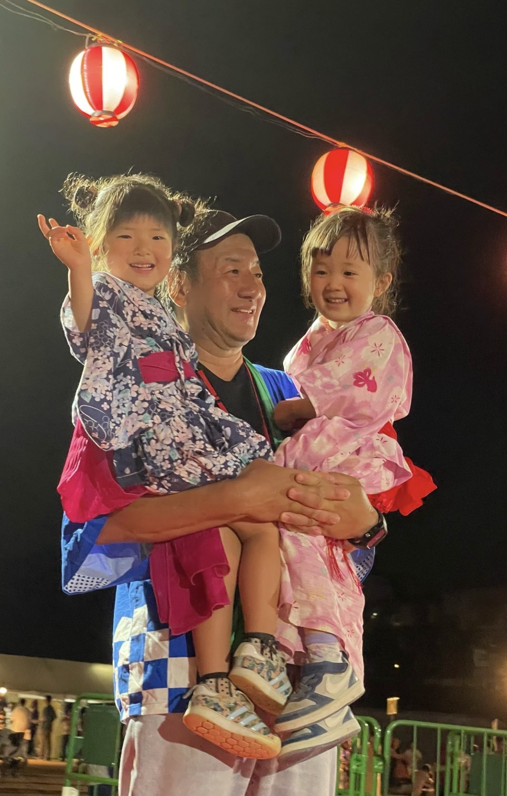

プロフィール
私は、自ら会社を経営する一人の「現役ビジネスパーソン」として、常に変化する経済の最前線でスピード感と合理性を重んじて生きてきました。また、大阪青年会議所（大阪JC）の理事をはじめとする若手経済人のネットワークの中で、この街の次世代のために何ができるかを熱く議論し、行動を起こしてきました。
その「経営者としての視点」と「リーダーとしての実行力」を認められ、13,000人・約4,400世帯が暮らす、川西市最大の地域コミュニティ「多田グリーンハイツ自治会」の会長に就任。常に住民の皆様のリアルな声に向き合い、現場の課題解決に奔走してきました。

「地域の子どもたちの笑顔が、一番の宝物。
未来を守るため、全力で汗をかきます。」
略歴・実績
現職: 多田グリーンハイツ自治会 会長、会社経営（民間企業 代表取締役）
主な経歴:
・一般社団法人 大阪青年会議所（大阪JC） 理事
スタンス: 特定の政党に偏らず、町の発展のために必要であれば協力関係を築く「協調型・自民系無所属」として、住民の声が100%の政策指針となる市政を目指します。